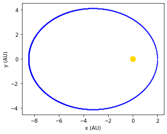
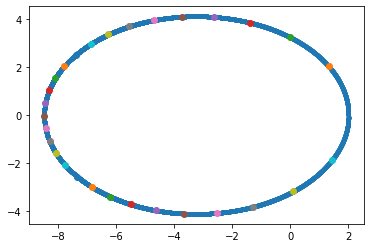

#import necessary modules
import numpy as np
import matplotlib.pyplot as plt
import matplotlib.animation as animation
class planet:
"""
define a class planet that contains initial position and velocity as well as mass
The class is called with arguments (x0,y0,vx0,vy0,m)
"""
GM = 4*np.pi**2
def __init__(self,x0,y0,vx0,vy0,m,clr):
self.x0 = x0
self.y0 = y0
self.vx0 = vx0
self.vy0 = vy0
self.m = m
self.clr = clr
self.x = []
self.y = []
self.vx = []
self.vy = []
self.time = []
def F(self,r,x,v):
return np.array([v,-GM*x/r**3])
def rk4_step(self,r,x,v):
k1 = dt*self.F(r,x,v)
k2 = dt*self.F(r,x + 0.5*k1[0], v + 0.5*k1[1])
k3 = dt*self.F(r,x + 0.5*k2[0], v + 0.5*k2[1])
k4 = dt*self.F(r,x + k3[0], v + k3[1])
x = x + (k1[0] + 2*k2[0] + 2*k3[0] + k4[0])/6.
v = v + (k1[1] + 2*k2[1] + 2*k3[1] + k4[1])/6.
return x,v
def rk4_planet(self,tfinal,dt): #dimensionless solve
t = 0.0
xn = self.x0
yn = self.y0
vxn = self.vx0
vyn = self.vy0
while t < tfinal+dt:
self.time.append(t)
self.x.append(xn)
self.y.append(yn)
self.vx.append(vxn)
self.vy.append(vyn)
rn = np.sqrt(xn**2 + yn**2)
xn,vxn = self.rk4_step(rn,xn,vxn)
yn,vyn = self.rk4_step(rn,yn,vyn)
t = t + dt
def plot_planet(self,nstep):
plt.plot(self.x[::nstep],self.y[::nstep],'.',markersize=0.5,color=self.clr)
plt.xlabel('x (AU)')
plt.ylabel('y (AU)')
plt.axes().set_aspect('equal')
plt.plot([0,0],[0,0],'o',markersize=10.0,color='gold')
plt.show()
def plot_two_planets(self,p,nstep):
plt.plot(self.x[::nstep],self.y[::nstep],'.',markersize = 1.0,color=self.clr)
plt.plot(p.x[::nstep],p.y[::nstep],'.',markersize = 1.0,color=p.clr)
plt.xlabel('x (AU)')
plt.ylabel('y (AU)')
plt.axes().set_aspect('equal')
plt.plot([0,0],[0,0],'o',markersize=10.0,color='gold')
plt.show()
def plot_radial_pos(self,nstep):
r = np.sqrt(np.asarray(self.x)**2 + np.asarray(self.y)**2)
plt.plot(self.time[::nstep],r[::nstep],'.',markersize=1.0)
plt.xlabel('time (yrs)')
plt.ylabel('r (AU)')
plt.show()
def energy_conserve(self):
E0 = 0.5*(self.vx0**2 + self.vy0**2) - GM/np.sqrt(self.x0**2 + self.y0**2)
r = np.sqrt(np.asarray(self.x)**2 + np.asarray(self.y)**2)
v = np.sqrt(np.asarray(self.vx)**2 + np.asarray(self.vy)**2)
E = 0.5*v**2 - GM/r
delta_n = 100*(E - E0)/E0
plt.plot(self.time,delta_n)
plt.xlabel('time (yrs)')
plt.ylabel('$\Delta^n$ (%)')
plt.show()
def Kepler_2(self,dt,Dt):
x = np.asarray(self.x)
y = np.asarray(self.y)
x0 = (x.max()+x.min())/2
y0 = (y.max()+y.min())/2
a = (np.sqrt((x-x0)**2 + (y-y0)**2)).max()
b = (np.sqrt((x-x0)**2 + (y-y0)**2)).min()
print(a,b,x0,y0)
ii = 1
t = 0.0
area = 0.0
t0 = self.time[ii]
plt.figure()
plt.plot(self.x,self.y,'.')
for i in range(len(self.time)):
theta1=np.arctan2(self.y[i-1],self.x[i-1])
theta2=np.arctan2(self.y[i],self.x[i])
#print(theta1,theta2)
area = area + 0.5*(self.x[i]**2 + self.y[i]**2)*(theta2-theta1)
if (t > Dt):
plt.plot(self.x[i],self.y[i],'o')
t0 = self.time[i]
t = 0.0
print(area)
area = 0.0
t = self.time[i]-t0
plt.show()
def animate(self,p,nstep):
lines=[]
fig, ax = plt.subplots(1,1)
for i in range(0,len(self.time),nstep):
p1 = ax.plot(self.x[i], self.y[i], 'bo', p.x[i], p.y[i], 'ro', 0, 0, 'yo', markersize=10)
ax.set_aspect('equal')
# p1 = ax.plot(p.x[i], p.y[i],'o',markersize=10, color=p.clr)
lines.append(p1)
# lines.append(p2)
ani = animation.ArtistAnimation(fig, lines, interval=50)
plt.show()
Lab 7 [Solutions] - Planetary Motion
- The motion of the Sun and Earth is a two-body problem.
- Problem reduced to a one-body problem by: 1) noting the mass of the Sun is much greater than the mass of Earth, 2) assume the Sun is stationary and fix origin at Sun’s center. One-body problem is more general. Introduce reduced mass,
\[\begin{equation*} \mu = \frac{mM}{m+M} \end{equation*}\]
where m = \(6 \times 10^{24}\) kg (Earth) and M = \(2 \times 10^{30}\) kg (Sun). Thus \(\mu \approx m\). - In the following, consider a single particle of mass \(m\) moving about a fixed center of force, which we take as the origin of the coordinate system.Newton’s universal law of gravitation is
\[\begin{equation*} {\rm \bf F} = -\frac{GmM}{r^3} {\rm \bf r} \end{equation*}\]
where \({\rm \bf r}\) is the vector from \(m\) to \(M\) and \(G=6.67 \times 10^{-11}\) m\(^3\)/(kg s\(^2\)). - The force law applies to objects of negligible spatial extent, but also applies to any uniform sphere or spherical shell if the distance \(r\) is measured from the center of each mass. - Gravitational force has two general properties: 1) its magnitude depends only on the separation of the objects and 2) its direction is along the line joining the objects. Such a force is called a . - The assumption of central force implies that the orbit (Earth) is restricted to a plane (e.g., \(xy\)) and the {} is conserved and lies in the third direction (\(z\)), i.e.,
\[\begin{equation*} L_z = ({\rm \bf r} \times m {\rm \bf v})_z = m (x v_y -y v_x) \end{equation*}\]
Note that in general $ {} = {} $ with \({\rm \bf p} = m {\rm \bf v}\).Energy conservation applies too, i.e.,
\[\begin{equation*} E = \frac{1}{2} m v^2 - \frac{GmM}{r} \end{equation*}\]
Equations of motion
- The equation of motion is
\[\begin{equation*} m \frac{d^2 {\rm \bf r}}{dt^2} = - \frac{GmM}{r^3}{\rm \bf r} \end{equation*}\]
- In force in Cartesian coordinates is
\[\begin{align*} F_x &= - \frac{GmM}{r^2} \cos \theta = -\frac{GmM}{r^3} x\\ F_y &= -\frac{GmM}{r^2} \sin \theta = -\frac{GmM}{r^3} y\\ \end{align*}\] - Thus the Cartisian equations of motion are \[\begin{align*} \frac{d^2 x}{dt^2} &= - \frac{GM}{r^3}x\\ \frac{d^2 y}{dt^2} &= - \frac{GM}{r^3}y \end{align*}\]
Circular orbits
- Planetary motion is nearly circular, so
\[\begin{equation*} a = \frac{v^2}{r} \end{equation*}\]
where \(v\) is the speed of the object and \(a\) is directed towards the center and is due to the gravitational force, i.e.,
\[\begin{equation*} \frac{mv^2}{r} = \frac{GmM}{r^2} \end{equation*}\]
or \[\begin{equation*} v = \left( \frac{GM}{r} \right)^{1/2} \end{equation*}\]
- The period of the orbit is
\[\begin{equation*} T = \frac{2 \pi r}{v} \end{equation*}\]
and
\[\begin{equation*} T^2 = \frac{4 \pi^2 r^3}{GM} \end{equation*}\]
- This is a special case of Kepler’s third law where \(r\) corresponds to the semi-major axis of an ellipse.
Elliptical orbits
- The most general orbit is an ellipse.
- The two foci of an ellipse, \(F_1\) and \(F_2\), have the property that for any point \(P\) the distance \(F_1P + F_2 P = const\).
- The longer axis is the major axis and half this length is the semi-major axis \(a\).
- The shorter axis is the minor axis and half this length is the semi-minor axis \(b\). Specify elliptical orbit by \(a\) and the eccentricity \(e\) where \(e\) is the ratio of the distance between the foci to the length of the major axis.
- Since \(F_1P + F_2P = 2a\),
\[\begin{equation*} e = \sqrt{1 - \frac{b^2}{a^2}} \end{equation*}\]
with \(0 < e < 1\). For a circle \(e=0\). For Earth’s orbit, \(e = 0.0167\).
Astronomical Units
- Since large numbers (once upon a time) are awkward, it is convenient to choose a system of units in which the magnitude of the produce \(GM\) is the order of unity.
- Convenient unit of length is the astronomical unit with
\[\begin{equation*} 1 {~\rm AU} = 1.496 \times 10^{11} {~{\rm m}} \end{equation*}\]
- The unit of time is one year = \(3.15 \times 10^7\) s.
- In these units, \(T\) = one year, \(a\) = 1 AU,
\[\begin{equation*} GM = \frac{4 \pi^2 a^3}{T^2} = 4 \pi^2 {\rm AU^3/yr^2} \end{equation*}\]
Mini solar system
- The presence of other planets implies that the total force on a planet is no longer a central force.
- Furthermore, the orbits of the planets are not exactly in the same plane, so the analysis must be extended to three dimensions.
- For simplicity, consider two planets of mass \(m_1\) and \(m_2\). The equations of motion are
\[\begin{align*} m_1 \frac{d^2 {\rm \bf r}_1}{dt^2} &=& - \frac{m_1G M}{r_1^3} {\rm \bf r}_1 + \frac{m_1Gm_2}{r_{21}^3} {\rm \bf r}_{21} \\ m_2 \frac{d^2 {\rm \bf r}_2}{dt^2} &=& - \frac{m_2G M}{r_2^3} {\rm \bf r}_2 - \frac{m_2Gm_1}{r_{21}^3} {\rm \bf r}_{21} \\ \end{align*}\]
where \({\rm \bf r}_1\) and \({\rm \bf r}_2\) are directed from the Sun to the planets and \({\rm \bf r}_{21} = {\rm \bf r}_2 - {\rm \bf r}_1\). - No analytical solution exists! Requires a numerical solution.
Introduction to Python “classes”.
Classes provide a means of bundling data and functionality together. Creating a new class creates a new type of object, allowing new instances of that type to be made. Each class instance can have attributes attached to it for maintaining its state. Class instances can also have methods (defined by its class) for modifying its state.
Planetary motion is the perfect application for Python classes. Here we want to bundle the properties of a given planet into a single object that contains data and methods.
- Examine the code in the box below and add the necessary comments. The following example shows how to initialize a planet,
pE = planet(x0,y0,vx0,vy0,mE,'blue')Here, pE is the “handle” for the object and will be used to specify variables and methods within the class. (Think of the class as a pot filled with things. The only way to pick up the pot is with a handle. One pot might be filled with beef stew and another with minestrone. A method might be to pour the contents into a bowl!) Try to keep the name of the handle short (just like we use np for numpy). Here I used pE for planet Earth. To access information about each planet, e.g., color, you would type
print(pE.clr)Five methods are defined for class planet: F, rk4_step, rk4_planet, plot_planet, and animate. To run the rk4 solution for orbital motion and to plot the result, type
pE.rk4_planet(tfinal,dt)
pE.plot_planet(nstep)Note that the self argument does not appear in the argument list when calling a given method. So what is self? This is the generic “handle” that will be carried through the class to access variables and functions/methods. Remember, calling a method in a class can be done for many different instances of these objects. For this lab, the instances are different planets. For planet Earth, the pE handle would be substituted for self. Note that you could pass another handle to any of the methods, referring to another planet. This might be useful in Exercise 3 when coupling terms are involved.
Exercise 1: Planet Earth
Initialize planet Earth. Specify the initial conditions, mass, and color.
Run the solution for Earth using \(x_0=1\), \(y_0=0\), \(v_{x0} = 0\), and the numerical value of \(v_{y0}\) that yields a circular orbit. Choose \(\Delta t\) to give a circular orbit that is reproducible over many periods.
Write a method for
class planetto calculate the energy conservation quantity, \(\Delta^n\), and examine the energy conservation as a function of \(\Delta t\). Plot \(\Delta^n\) vs. \(t\). The plotting should be contained in the method (avoid extra code outside ofclass planet).Repeat part 3 for angular momentum conservation.
Write a method for
class planetto verify Kepler’s third law, i.e., construct a simple condition which allows you to find the numerical value of the period.Choose initial conditions to obtain an elliptical orbit, e.g., set \(y_0 = 0\), \(v_{x0} = 0\) and by trial and error find \(x_0\) and \(v_{y0}\). Verify Kepler’s second law (equal areas in equal times). You could plot the orbit on a fine grid and count squares inside each region. This doesn’t need to be too fancy! Choose an area near one end of the major axis and other near the minor axis.
GM = 4*np.pi**2
M = 2e30 #kg
# initialize Earth
mE = 6e24 #kg
r = 1.0
v = np.sqrt(GM/r)
x0 = r +1.0
y0 = 0
vx0 = 0
vy0 = v - 0.1*v
pE = planet(x0,y0,vx0,vy0,mE,'blue')
print(pE.clr)
tfinal = 12.0
dt = 0.001
pE.rk4_planet(tfinal,dt)
pE.plot_planet(1)
#pE.animate(10)blue
Exercise 2: Perturbations
Suppose a small radial “kick” or impulse is applied to the planet. How will the orbit change?
Determine if the angular momentum and total energy are changed by the radial perturbation.
Suppose a small tangential “kick” or impulse is applied to the planet in a circular orbit. How will the orbit change? Is the orbit stable? Determine if the angular momentum and total energy are changed.
Exercise 3: A mini solar system
Initialize a second planet (e.g., Jupiter). Write a program to simulate the mutual interaction between these two planets. You are strongly encouraged to uses
classes.Are the angular momentum and total energy Earth still conserved?
Increase the mass of the second planet and observe the effects on Earth’s orbit.
def F(m,r,r12,x12,x,v):
return np.array([v,-GM*x/r**3 - GM*(m/M)*x12/r12**3])
def rk4_two_planets(p1,p2):
t = 0.0
x1 = p1.x0
y1 = p1.y0
vx1 = p1.vx0
vy1 = p1.vy0
x2 = p2.x0
y2 = p2.y0
vx2 = p2.vx0
vy2 = p2.vy0
while t < tfinal+dt:
p1.time.append(t)
p1.x.append(x1)
p1.y.append(y1)
p1.vx.append(vx1)
p1.vy.append(vy1)
p2.time.append(t)
p2.x.append(x2)
p2.y.append(y2)
p2.vx.append(vx2)
p2.vy.append(vy2)
#planet 1
x12 = x1 - x2
y12 = y1 - y2
r12 = np.sqrt(x12**2 + y12**2)
r1 = np.sqrt(x1**2 + y1**2)
k1 = dt*F(p2.m,r1,r12,x12,x1,vx1) #x-component planet 1
k2 = dt*F(p2.m,r1,r12,x12,x1 + 0.5*k1[0], vx1 + 0.5*k1[1])
k3 = dt*F(p2.m,r1,r12,x12,x1 + 0.5*k2[0], vx1 + 0.5*k2[1])
k4 = dt*F(p2.m,r1,r12,x12,x1 + k3[0], vx1 + k3[1])
x1 = x1 + (k1[0] + 2*k2[0] + 2*k3[0] + k4[0])/6.
vx1 = vx1 + (k1[1] + 2*k2[1] + 2*k3[1] + k4[1])/6.
k1 = dt*F(p2.m,r1,r12,y12,y1,vy1) #y-component planet 1
k2 = dt*F(p2.m,r1,r12,y12,y1 + 0.5*k1[0], vy1 + 0.5*k1[1])
k3 = dt*F(p2.m,r1,r12,y12,y1 + 0.5*k2[0], vy1 + 0.5*k2[1])
k4 = dt*F(p2.m,r1,r12,y12,y1 + k3[0], vy1 + k3[1])
y1 = y1 + (k1[0] + 2*k2[0] + 2*k3[0] + k4[0])/6.
vy1 = vy1 + (k1[1] + 2*k2[1] + 2*k3[1] + k4[1])/6.
#planet 2
x21 = -x12 #x2 - x1
y21 = -y12 #y2 - y1
r21 = np.sqrt(x21**2 + y21**2)
r2 = np.sqrt(x2**2 + y2**2)
k1 = dt*F(p1.m,r2,r21,x21,x2,vx2) #x-component planet 1
k2 = dt*F(p1.m,r2,r21,x21,x2 + 0.5*k1[0], vx2 + 0.5*k1[1])
k3 = dt*F(p1.m,r2,r21,x21,x2 + 0.5*k2[0], vx2 + 0.5*k2[1])
k4 = dt*F(p1.m,r2,r21,x21,x2 + k3[0], vx2 + k3[1])
x2 = x2 + (k1[0] + 2*k2[0] + 2*k3[0] + k4[0])/6.
vx2 = vx2 + (k1[1] + 2*k2[1] + 2*k3[1] + k4[1])/6.
k1 = dt*F(p1.m,r2,r21,y21,y2,vy2) #y-component planet 1
k2 = dt*F(p1.m,r2,r21,y21,y2 + 0.5*k1[0], vy2 + 0.5*k1[1])
k3 = dt*F(p1.m,r2,r21,y21,y2 + 0.5*k2[0], vy2 + 0.5*k2[1])
k4 = dt*F(p1.m,r2,r21,y21,y2 + k3[0], vy2 + k3[1])
y2 = y2 + (k1[0] + 2*k2[0] + 2*k3[0] + k4[0])/6.
vy2 = vy2 + (k1[1] + 2*k2[1] + 2*k3[1] + k4[1])/6.
t = t + dt
#---------------------------------------------------------------------------------
class rk4_step:
"""
define a class planet that contains initial position and velocity as well as mass
The class is called with arguments (x0,y0,vx0,vy0,m)
"""
def __init__(self,m,r1,r12,x12,x,v):
self.m = m
self.r1 = r1
self.r12 = r12
self.x12 = x12
self.x = x
self.v = v
def F2(self,x,v):
return np.array([v,-GM*x/self.r1**3 - GM*(self.m/M)*self.x12/self.r12**3])
def rk4(self):
k1 = dt*self.F2(self.x,self.v) #x-component planet 1
k2 = dt*self.F2(self.x + 0.5*k1[0], self.v + 0.5*k1[1])
k3 = dt*self.F2(self.x + 0.5*k2[0], self.v + 0.5*k2[1])
k4 = dt*self.F2(self.x + k3[0], self.v + k3[1])
self.x = self.x + (k1[0] + 2*k2[0] + 2*k3[0] + k4[0])/6.
self.v = self.v + (k1[1] + 2*k2[1] + 2*k3[1] + k4[1])/6.
return self.x,self.v
def move_planets(p1,p2):
t = 0.0
while t < tfinal+dt:
p1.time.append(t)
p1.x.append(p1.x0)
p1.y.append(p1.y0)
p1.vx.append(p1.vx0)
p1.vy.append(p1.vy0)
p2.time.append(t)
p2.x.append(p2.x0)
p2.y.append(p2.y0)
p2.vx.append(p2.vx0)
p2.vy.append(p2.vy0)
#planet 1
x12 = p1.x0 - p2.x0
y12 = p1.y0 - p2.y0
r12 = np.sqrt(x12**2 + y12**2)
r1 = np.sqrt(p1.x0**2 + p1.y0**2)
rk = rk4_step(p2.m,r1,r12,x12,p1.x0,p1.vx0) #x-component
p1.x0, p1.vx0 = rk.rk4()
rk = rk4_step(p2.m,r1,r12,y12,p1.y0,p1.vy0) #x-component
p1.y0, p1.vy0 = rk.rk4()
#planet 2
x21 = -x12 #x2 - x1
y21 = -y12 #y2 - y1
r21 = np.sqrt(x21**2 + y21**2)
r2 = np.sqrt(p2.x0**2 + p2.y0**2)
rk = rk4_step(p1.m,r2,r21,x21,p2.x0,p2.vx0) #x-component
p2.x0, p2.vx0 = rk.rk4()
rk = rk4_step(p1.m,r2,r21,y21,p2.y0,p2.vy0) #y-component
p2.y0, p2.vy0 = rk.rk4()
t = t + dt
#---------------------------------------------------------------------------------
#AU = 1.496e11 #m
#yr = 3.15e7 #s
GM = 4*np.pi**2
M = 2e30 #kg
#G = 6.67e-11 #m^3/(kg s^2)
#G = G*
# initialize Earth
mE = 6e24 #kg
r = 1.0
v = np.sqrt(GM/r)
x0 = r +1.0
y0 = 0
vx0 = 0
vy0 = v - 0.1*v
pE = planet(x0,y0,vx0,vy0,mE,'blue')
# initialize Jupiter
mJ = 5e29 #kg
r = 5.0
v = np.sqrt(GM/r)
x0 = r
y0 = 0
vx0 = 0
vy0 = v #+ 0.1*v
pJ = planet(x0,y0,vx0,vy0,mJ,'orange')
print(pE.m/M,pJ.m/M)
tfinal = 12.0
dt = 0.001
pE.rk4_planet(tfinal,dt)
pE.plot_planet(1)
#pE.energy_conserve()
pE.Kepler_2(dt,400*dt)
"""
#pJ.rk4_planet(tfinal,dt)
#pJ.plot_two_planets(pE)
##rk4_two_planets(pE,pJ)
#test_argv(pE,pJ)
move_planets(pE,pJ)
#pJ.plot_two_planets(pE,10)
#pE.plot_planet(10)
#pE.plot_radial_pos(10)
pE.animate(pJ,50)
"""
3e-06 0.25
5.2476301693044025 4.1229623180606705 -3.244295752495864 -0.0025090452374989525
2.3667027192213537
2.2692629499201646
2.2745700572876077
2.2742354735563284
2.274000710641138
2.27383551183753
2.2737144240333214
2.273621766107231
2.273548006387743
2.2734871517532715
2.2677800116078237
2.267734594498202
2.267693442826197
2.267655064881227
-224.24017691125354
2.267581891615205
2.2675449849439775
2.2675064358785044
2.2674650082240215
2.2674191831020374
2.273021180002296
2.272959488589941
2.2728845245454967
2.272790097382022
2.2726663406788212
2.2724970279162653
2.2722560965736074
2.2719152937047515
2.271585884958003
'\n#pJ.rk4_planet(tfinal,dt)\n#pJ.plot_two_planets(pE)\n\n##rk4_two_planets(pE,pJ)\n#test_argv(pE,pJ)\n\nmove_planets(pE,pJ)\n\n#pJ.plot_two_planets(pE,10)\n#pE.plot_planet(10)\n#pE.plot_radial_pos(10)\npE.animate(pJ,50)\n'